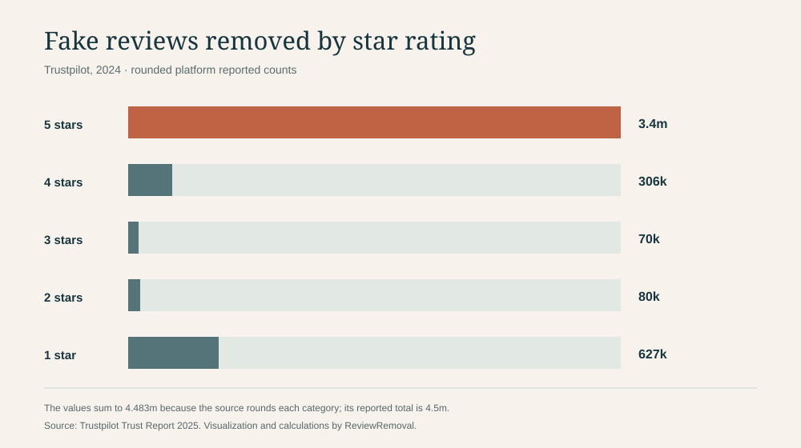
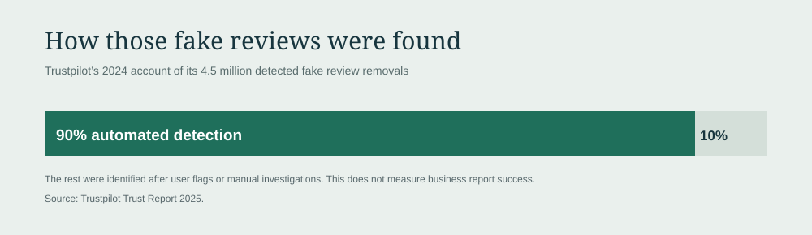

On this page
Trustpilot said it removed 4.5 million detected fake reviews in 2024. Its own star-rating breakdown lists 3.4 million five-star and 627,000 one-star removals. Using those rounded figures, the five-star count was about 5.4 times the one-star count. Trustpilot Trust Report 2025
This article turns the published breakdown into a clear table and two downloadable charts. The central point is narrow but useful: in Trustpilot’s 2024 detected-and-removed set, fake positive reviews were prominent. The data does not tell us which individual review is fake, how common fake reviews were within all five-star reviews, or what happened to any particular business report.
Key findings
- Trustpilot reports that detected fake reviews removed in 2024 equalled 7.4% of reviews submitted that year. That is a platform-reported detected removal share, not an estimate of all fake reviews that existed. Trustpilot Trust Report 2025
- Its rounded star-rating counts add to 4.483 million, close to the reported 4.5 million total. The 17,000 difference is consistent with rounding and is not evidence of another category.
- Of the published category sum, five-star reviews account for about 75.8%. We calculate that as 3.4 million ÷ 4.483 million and label it approximate because Trustpilot rounded the inputs.
- Trustpilot says 90% of the detected fake reviews removed in 2024 were identified automatically. The remainder came after user flags or manual investigations; this is not a business-report success rate. Trustpilot Trust Report 2025
The published star-rating breakdown
The chart plots Trustpilot’s published counts, not reconstructed raw records. A bar for three-star reviews looks tiny because the five-star figure is 3.4 million. We keep the same scale for every row so the difference is visible without distortion.


| Rating | Reported count | Approx. share of published category sum |
|---|---|---|
| 5 stars | 3.4 million | 75.8% |
| 4 stars | 306,000 | 6.8% |
| 3 stars | 70,000 | 1.6% |
| 2 stars | 80,000 | 1.8% |
| 1 star | 627,000 | 14.0% |
The approximate shares use the sum of the five published rating counts (4.483 million) as the denominator; they should not be mistaken for exact platform statistics. Trustpilot’s reported headline total is 4.5 million. Source report
How Trustpilot says it found them
Trustpilot says its automated models detected 90% of the 4.5 million fake reviews removed in 2024. The other detected fake reviews were identified after users flagged content or its teams investigated manually. Its report also says it screens every submitted review before publication, though detection can continue afterward. Trustpilot Trust Report 2025


A newer Trustpilot Trust Centre currently lists 7.8 million reviews detected as fake and removed in 2025. It does not publish a star-rating split on that page, so the rating analysis above remains tied to 2024. We will not project the 2024 proportions onto 2025 without the missing data.
What this means for a business
The results challenge the idea that fake-review enforcement is only about one-star attacks: many detected fake reviews removed by Trustpilot were highly positive. But the chart cannot reveal the probability that a randomly chosen five-star or one-star review is fake. For that, we would need the number of all submitted reviews at each star rating, which is not supplied in this breakdown.
Trustpilot’s business guidelines say a business can flag a review that breaches its rules, while disliking a rating or disagreeing with criticism is not a valid reason. The platform also says it may act against misuse of its flagging tools. A useful report should therefore identify the specific content concern and provide evidence where available.
Avoid a common false conclusion
“75.8% of five-star reviews are fake” is not supported. About 75.8% of the rounded, detected fake removals in this rating breakdown were five-star. Those are entirely different denominators.
Methods and limits
- We transcribed Trustpilot’s five rating counts, reported 4.5 million total, 7.4% detected-removal share and 90% automated-detection share from its Trust Report 2025, which covers 2024 activity.
- We summed the five rounded counts: 3,400,000 + 306,000 + 70,000 + 80,000 + 627,000 = 4,483,000. We divided each category by that sum for approximate shares; percentages may not sum to exactly 100% after rounding.
- We calculated the five-star to one-star ratio as 3,400,000 ÷ 627,000 ≈ 5.4. It is an approximate ratio of removed detected fake review counts, not a comparison of fraud rates.
- The source is platform self-reporting. We did not independently inspect review-level data. “Detected fake” excludes fake reviews not detected. We do not infer causes, intent, or rates for businesses or countries.
Accessed: September 21, 2026. Reuse: You may cite this analysis and download its CSV or SVG with attribution to ReviewRemoval and a link to this article. Attribute the original counts to Trustpilot.
Suggested citation
ReviewRemoval (2026), “Trustpilot fake reviews by star rating: what its 2024 data actually shows,” September 21, 2026. Link to this page and identify Trustpilot as the source of the underlying counts.
Primary sources
- Trustpilot Trust Report 2025 — 2024 figures, star breakdown, 7.4% and automation share.
- Trustpilot Trust Centre — current 2025 detected fake removal headline.
- Trustpilot guidelines for businesses — review flagging and misuse rules.
Need help with a specific review?
Send the platform and the review link. We’ll assess the details and explain the price before paid work begins.
Request Trustpilot review help